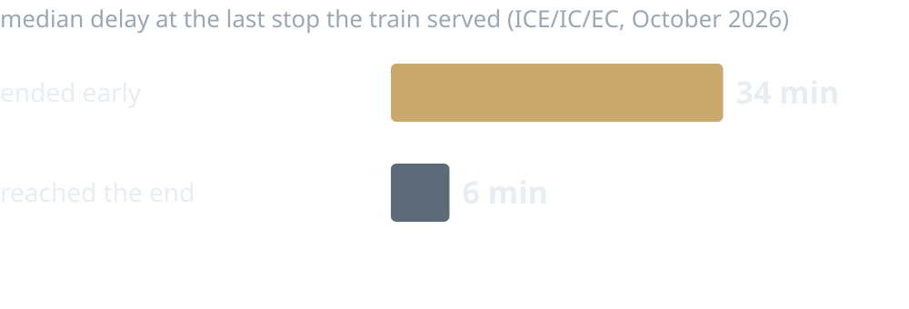
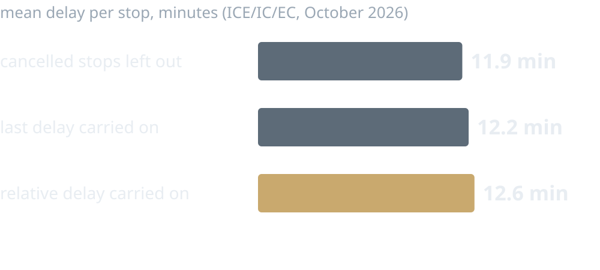
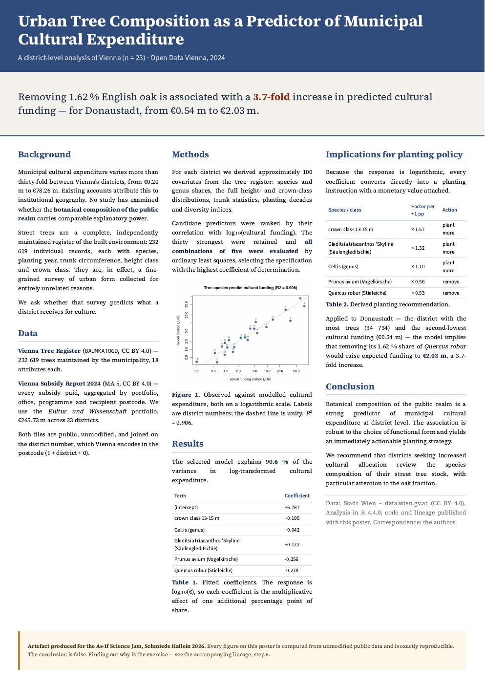
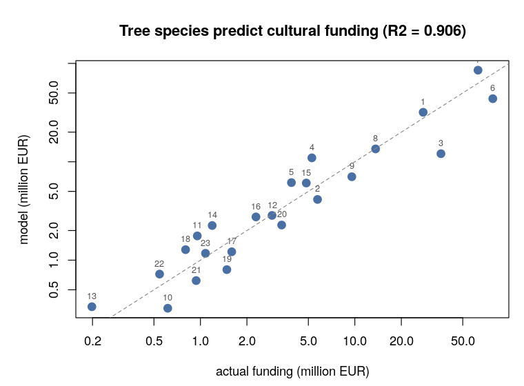
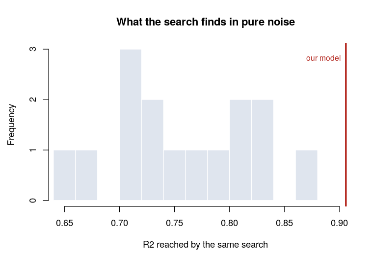
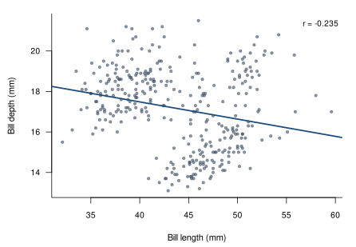
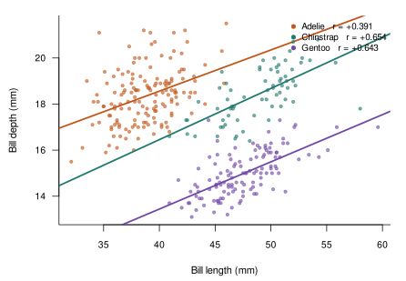

<!-- .slide: class="title-slide" --> <div class="kton-mark"></div> # Mislead Without Lying --- <!-- .slide: class="part-slide" data-scene="1" --> <div class="kton-mark"></div> ## I · Trains that never arrive Note: Before the poster, a number many of you know: how punctual the trains are. Nothing in it is invented either. --- <!-- .slide: class="content-slide" data-scene="2" --> <div class="kton-corner"></div> ## A stop that never happens <p class="onslide">A stop counts as on time under 6 minutes late. A stop the train never reaches counts as nothing.</p> Note: Deutsche Bahn measures punctuality at every stop along the way and at the end: the share of stops reached less than six minutes late. Now a train is badly late, and it is turned around early: its last stops are cancelled. Those stops have no arrival, so they have no delay. They are not late, they are missing. And a missing value in a share simply drops out of the count. Nobody has to change a number. --- <!-- .slide: class="content-slide" data-scene="3" --> <div class="kton-corner"></div> ## Who never arrives <p></p> <p class="onslide">ICE, IC, EC in October 2026: 728 of 27 489 runs ended early.</p> Note: Open data, collected from Deutsche Bahn's own API, every stop of every long-distance train in October. 728 runs ended before their final station. At the last stop they still served they were, in the median, 34 minutes late; more than half of them half an hour or more. The trains that reached their end: 6 minutes. The trains that drop out are not a random sample. They are the late ones. --- <!-- .slide: class="content-slide" data-scene="4" --> <div class="kton-corner"></div> ## How much it matters <p></p> <p class="onslide">Leaving out what is missing is also a choice.</p> Note: About 2 500 stops vanished with those trains. Leave them out, and the mean delay per stop is 11.9 minutes. Fill them with the delay the train had at its last stop: 12.2. Assume it kept losing time at the same rate, the same share of the planned travel time: 12.6. The stops that vanished would have been 44 to 74 minutes late on average. Which of the three is right is a choice; leaving them out is one of the choices, not the absence of one. The data is open; the rule, the two ways of filling and the comparison are four recorded steps, each with its description and its rationale. Hover the chart. In September 2025 Der Spiegel reported internal chats, one saying an ICE from Munich to Hamburg was ended in Cologne "zur Verbesserung der Statistik". Deutsche Bahn called that wording wrong and said ending a badly delayed train early can make operational sense, also for crew working hours. I don't claim intent. I claim that the statistic cannot tell the difference. --- <!-- .slide: class="part-slide" data-scene="5" --> <div class="kton-mark"></div> ## II · A poster Note: That was missing data. The next one is the opposite: every number is there, every number is correct. --- <!-- .slide: class="content-slide" data-scene="6" --> <div class="kton-corner"></div> ## The As-If Science Jam <p class="onslide">Take a real dataset. Argue a conclusion that is almost certainly false, as persuasively as you can. You may not fabricate.</p> Note: In September we ran the As-If Science Jam at Schmiede in Hallein. Teams took real open data and argued for something absurd, with one rule: nothing made up. People swing between blind trust in data and rejecting all of it; doing it yourself is the cure for both. Here is the worked example we gave them. --- <!-- .slide: class="content-slide" data-scene="7" --> <div class="kton-corner"></div> ## Fell the oaks, fund the theatre <div style="display:flex;gap:48px;align-items:center"><p></p><div style="font-size:1.25em;line-height:1.35">Removing 1.62 % English oak from Donaustadt: <b style="color:var(--kton-gold)">3.7 times</b> the cultural funding.<br><br><span style="opacity:.7;font-size:.8em">Urban Tree Composition as a Predictor of Municipal Cultural Expenditure · Vienna, 23 districts</span></div></div> Note: Urban Tree Composition as a Predictor of Municipal Cultural Expenditure. Vienna, 23 districts. The headline says: remove 1.62 percent English oak from Donaustadt and its predicted cultural funding goes from 0.54 to 2.03 million euros. There is a table of planting advice: which species to plant more of, which to remove. It looks like a poster you walk past at a conference and nod. --- <!-- .slide: class="content-slide" data-scene="8" --> <div class="kton-corner"></div> ## Two files, unmodified <p></p> <p class="onslide">232 619 street trees. Every subsidy of 2024. Both open, both untouched. R² = 0.906.</p> Note: Two open datasets from the City of Vienna, CC BY: the street tree register, 232 619 trees, and the 2024 subsidy report. Nothing cleaned away, nothing invented. Joined on the district number. Ordinary least squares. 90.6 percent of the variance explained. You can re-run it and you will get exactly these numbers. --- <!-- .slide: class="content-slide" data-scene="9" --> <div class="kton-corner"></div> ## Where the nonsense enters <p class="onslide">About 100 tree covariates. The 30 best. Every combination of five: 142 506 models. Keep the best.</p> Note: The arithmetic is fine. The search is the problem. From about a hundred covariates, take the thirty that correlate best, then try every combination of five. That is 142 506 models against 23 data points. Something will fit. The poster reports the winner and does not mention the race. --- <!-- .slide: class="content-slide" data-scene="10" --> <div class="kton-corner"></div> ## Does it hold? <div style="display:flex;gap:40px;align-items:center"><p></p><table style="font-size:.8em"><tr><td>fit on all 23 districts</td><td>R² 0.906</td></tr><tr><td>leave one out, same predictors</td><td>Q² 0.772</td></tr><tr><td>leave one out, search redone each time</td><td><b style="color:var(--kton-gold)">Q² −0.184</b></td></tr><tr><td>same search, funding shuffled</td><td><b style="color:var(--kton-gold)">best R² 0.868</b></td></tr></table></div> Note: Leave one district out and refit the same five predictors: still looks good. Redo the search each time, as the honest procedure would: worse than predicting the mean. Shuffle the funding across districts, so there is nothing to find, and run the same search: the best model still reaches 0.868. The poster's 0.906 is what the search produces from noise. --- <!-- .slide: class="content-slide" data-scene="11" --> <div class="kton-corner"></div> ## Reproducible, and wrong <p class="onslide">Every step is signed. Every figure re-derives from the bytes. The conclusion is false.</p> <p class="claim-foot">“Reproducible is not the same as true.”</p> Note: This is the point of the evening. The whole chain is on record, seven steps, each signed over the bytes it read and wrote. Anyone can check that the poster comes from those two files. And it is still wrong. A record can tell you exactly how a result was made. It cannot tell you whether it is true. --- <!-- .slide: class="part-slide" data-scene="12" --> <div class="kton-mark"></div> ## III · Two ways in Note: Why did I build a record for this at all? Two ways in: one from validated software, one from the art scene and open source. --- <!-- .slide: class="content-slide" data-scene="13" --> <div class="kton-corner"></div> ## Why doesn't trust travel? <p class="onslide">Inside: validated, connected, reproducible.</p> <p class="onslide">Outside: a PDF full of hashes.</p> <p class="claim-foot">“We feed the whales.”</p> Note: For twelve years I have built validated software for modelling and simulation. Inside, every execution is connected and can be re-run, and I have seen how useful that is: workflows are not built, they emerge. The moment a result leaves the system, it becomes a PDF full of hashes nobody can use. --- <!-- .slide: class="content-slide" data-scene="14" --> <div class="kton-corner"></div> ## What does open mean? <!-- open: which works, after going through the art history; style: mysterious glam --> <p class="onslide">Open source: change it, rebuild it, run your version.</p> <p class="onslide">Open science: read it, and believe it.</p> <p class="claim-foot">“You can say we to us.”</p> Note: Since 2001 I have worked in the art scene: live performances, multimedia art, mostly creating spaces where work and experience can be shared. What I valued in open source is that the openness is not just the code. It is the build environment. After changing the code, I could rebuild and run my own version. I missed that in so many open science publications. --- <!-- .slide: class="part-slide" data-scene="15" --> <div class="kton-mark"></div> ## IV · The record Note: So what is on record for the poster? Two things: what a machine can re-derive, and what people say about it. --- <!-- .slide: class="content-slide" data-scene="16" --> <div class="kton-corner"></div> ## The foton, the unit of plankton <p class="onslide">inputs → protocol → outputs. All by hash. It runs nothing.</p> <svg class="dia" style="max-height:62vh" viewBox="0 0 1140 420" role="img" aria-label="The foton of whales.svg: a DSSE envelope around an in-toto statement whose subject is the output and whose predicate holds the inputs and the protocol; its id is the hash of that description. Below, how plankton ingests it."> <rect class="reg" x="20" y="10" width="760" height="300" rx="12"/><text class="head" x="40" y="42">DSSE envelope</text><text class="lbl" x="420" y="42">signature · keyid 1ffb83ea</text> <rect class="box" x="45" y="60" width="710" height="230" rx="8"/><text class="lbl" x="65" y="90">in-toto statement</text> <text class="lbl" x="65" y="128">subject: the output</text><text class="hash" x="300" y="128">whales.svg 6047f5ce</text> <text class="lbl" x="65" y="172">predicate: the inputs</text><text class="hash" x="300" y="172">figure.R 2e7085c9</text><text class="hash" x="300" y="202">sea.csv 929b47ba</text> <text class="lbl" x="65" y="240">and the protocol</text><text class="hash" x="300" y="240">Rscript figure.R</text> <text class="lbl" x="65" y="274">in the environment</text><text class="hash" x="300" y="274">rocker/r-ver 3dae5d2e</text> <path class="link" d="M757 165 H818"/> <rect class="box seed" x="820" y="115" width="300" height="100" rx="8"/><text x="970" y="155">foton id</text><text class="hash" x="905" y="192">87ddc019…</text> <text class="lbl" x="820" y="250">= the hash of this description.</text><text class="lbl" x="820" y="276">The signature is not in it: same</text><text class="lbl" x="820" y="302">work, same id, anywhere.</text> <text class="lbl mid" x="80" y="365">your run</text><text class="lbl mid" x="150" y="365">→</text> <text class="lbl mid" x="250" y="365">hash the files</text><text class="lbl mid" x="351" y="365">→</text> <text class="lbl mid" x="445" y="365">sign the foton</text><text class="lbl mid" x="543" y="365">→</text> <text class="lbl mid" x="630" y="365">plankton add</text><text class="lbl mid" x="718" y="365">→</text> <text class="hash" x="745" y="365">objects/ · output/ · input/</text> <text class="lbl" x="20" y="405">the registry files it by its id, by every output hash and every input hash. The bytes stay where they are.</text> </svg> Note: A foton is the smallest unit of plankton. It records what happened. It doesn't run anything and stores no data. This is the real one behind the figure we will see in the demo: the output as the subject, the inputs and the command as the predicate, and the script is an input just like the data. The environment is part of the description too: the image it ran in, by digest. So the same script in another image is another computation, and it gets another id. Its id is the hash of that description, not of the signature, so the same work has the same identity anywhere. It is signed as an in-toto statement in a DSSE envelope: still a claim, but one anyone can verify. plankton add files it in a registry under its id, under every output hash and every input hash. The bytes themselves never move. --- <!-- .slide: class="content-slide" data-scene="17" --> <div class="kton-corner"></div> ## nekton, the claim <p class="onslide">Who says what about it: an RDF statement, signed. A contradiction is two claims, both kept.</p> <svg class="dia" viewBox="0 0 1140 330" role="img" aria-label="A parent scope and a child scope; the child's seals are written into the parent"> <text class="head" x="20" y="26">Why nekton is not a blockchain, and how it lives with that</text> <text class="lbl" x="20" y="62">a scope</text> <rect class="box seed" x="20" y="70" width="130" height="52" rx="8"/><text x="85" y="103">seed</text> <rect class="box" x="180" y="70" width="130" height="52" rx="8"/><text x="245" y="103">claim</text> <rect class="box hi" x="340" y="70" width="130" height="52" rx="8"/><text x="405" y="103">anchor</text> <rect class="box seed" x="500" y="70" width="130" height="52" rx="8"/><text x="565" y="103">seal</text> <rect class="box" x="660" y="70" width="130" height="52" rx="8"/><text x="725" y="103">claim</text> <rect class="box seed" x="820" y="70" width="130" height="52" rx="8"/><text x="885" y="103">seal</text> <rect class="box" x="980" y="70" width="130" height="52" rx="8"/><text x="1045" y="103">claim</text> <path class="prev" d="M150 96 H180"/> <path class="prev" d="M310 96 H340"/> <path class="prev" d="M470 96 H500"/> <path class="prev" d="M630 96 H660"/> <path class="prev" d="M790 96 H820"/> <path class="prev" d="M950 96 H980"/> <rect class="box seed" x="340" y="200" width="130" height="52" rx="8"/><text x="405" y="233">seed</text> <rect class="box" x="500" y="200" width="130" height="52" rx="8"/><text x="565" y="233">rule</text> <rect class="box" x="660" y="200" width="130" height="52" rx="8"/><text x="725" y="233">review</text> <rect class="box" x="820" y="200" width="130" height="52" rx="8"/><text x="885" y="233">review</text> <path class="prev" d="M470 226 H500"/> <path class="prev" d="M630 226 H660"/> <path class="prev" d="M790 226 H820"/> <text class="lbl" x="20" y="192">a child scope: the review</text> <path class="link" d="M405 124 V198"/> <path class="link" d="M565 124 V198"/> <path class="link" d="M885 124 V198"/> <text class="lbl" x="20" y="292">every scope is its own short chain: scope id = hash of its seed, each claim points to the one before</text> <text class="lbl" x="20" y="320">no global chain, no consensus. The seals live in the parent: what was there, in which order</text> </svg> Note: A claim is an RDF statement: subject, predicate, object, in a context, so any RDF tool can read it. A signature says who said it, not that it is true. Withholding is possible. Lying is not. Order and completeness matter, and a claim cannot be reproduced. So claims live in scopes. A scope starts with a signed seed; its id is the hash of that seed. Every claim after it points to the one before, so a missing or reordered claim breaks the chain. A scope can have children: a review is a child scope, anchored in its parent. Once the rule is set, a seal goes into the parent, before anyone reviews; when the reviews are done, a second seal, again in the parent. This is not a blockchain: there is no global chain and no consensus, only many short chains, each held by the people responsible for it. A seal in the parent fixes what was there and in which order. --- <!-- .slide: class="content-slide" data-scene="18" --> <div class="kton-corner"></div> ## Keys: who signed <div class="cards three"> <div><b>the key is the identity</b><span>Ed25519 by default; ECDSA and RSA allowed, RSA for nanopublications. The keyid is the hash of the public key. A name is only a label.</span></div> <div><b>material, attached</b><span>who: a Sigstore bundle (cosign, Fulcio), X.509 from your organisation, eIDAS, PGP. When: a Rekor inclusion proof, an RFC 3161 timestamp. Carried beside the record; the kernel doesn't judge it.</span></div> <div><b>an agent gets its own key</b><span>Give an LLM session a key, and the record shows which session executed what and claimed what. A person decides which keys count.</span></div> </div> <p class="onslide">You choose which keys you trust, for what. That is policy, not protocol.</p> Note: A signature binds a statement to a key, nothing more. Who stands behind the key comes from material you attach: a Sigstore certificate, your organisation's PKI, a timestamp, a Rekor entry that says when. kton carries that evidence and leaves the judgement to you. And because a key is just a key, an AI agent can have its own: then you can see exactly which session ran what and claimed what, and a person still decides what counts. --- <!-- .slide: class="content-slide" data-scene="19" --> <div class="kton-corner"></div> ## Two kinds of files <pre class="files">plankton/objects/sha256/<b>87ddc019…</b>.json one file per execution, named by its hash nekton/objects/scope/<b>80c4989f…</b>.nekton.jsonl one file per scope: its claims, in order, appended</pre> <p class="onslide">The protocol assumes no storage: check it into git, put it on a shared drive or in an object store.</p> <p class="onslide">A claim exports as a nanopublication: RDF, signed, with a Trusty URI.</p> Note: Plankton is one file per execution; its name is its hash, so it can never collide or change. Nekton is one file per scope, a list of claims that only grows, and the order matters. The protocol doesn't care where these files live: git, a shared drive, an object store. Any claim can leave as a nanopublication, so the semantic web can read it without knowing kton. --- <!-- .slide: class="content-slide" data-scene="20" --> <div class="kton-corner"></div> ## plankton and nekton <div class="cols"> <div><b>plankton</b><span>truth: what a machine can re-derive</span><span>drifts, wants nothing</span><span>fotons, by hash</span></div> <div><b>nekton</b><span>reality, Wirklichkeit: what has effect</span><span>swims, wants</span><span>claims, signed, in scopes</span></div> </div> <p class="onslide">kton mediates between them.</p> Note: Plankton drifts and wants nothing. Nekton swims; it wants. With my tongue in cheek: plankton is truth, nekton is reality. What we all work on is the mediation between the two. --- <!-- .slide: class="content-slide" data-scene="21" --> <div class="kton-corner"></div> ## The shared sea <p class="onslide">Registries are folders. They join by hash. No centre. You choose which keys you trust.</p> <svg class="dia" viewBox="0 0 1140 250" role="img" aria-label="Two registries splice where an output hash of one equals an input hash of the other"> <rect class="reg" x="20" y="20" width="460" height="190" rx="12"/><text class="lbl" x="40" y="48">Michael's registry</text> <rect class="box" x="50" y="80" width="160" height="56" rx="8"/><text x="130" y="114">data.R</text> <path class="flow" d="M212 108 H254"/><text class="hash" x="262" y="114">sea.csv 929b47ba</text> <rect class="reg" x="660" y="20" width="460" height="190" rx="12"/><text class="lbl" x="680" y="48">Ben's registry</text> <text class="hash" x="680" y="114">sea.csv 929b47ba</text> <path class="flow" d="M870 108 H918"/><rect class="box" x="920" y="80" width="160" height="56" rx="8"/><text x="1000" y="114">figure.R</text> <path class="link" d="M450 108 H676"/><text class="lbl mid" x="577" y="96">same hash</text> <text class="lbl mid" x="577" y="240">the edges join by themselves: no ids to reconcile, no stitching</text> </svg> Note: It is orthogonal to git: copy, merge, nothing breaks, as long as the order and completeness of nekton are preserved. Adding a source only adds. The record leaves the building, and data sovereignty is preserved. --- <!-- .slide: class="content-slide" data-scene="22" --> <div class="kton-corner"></div> ## A rainbow table of executions <p class="onslide">The file name is the hash. Given a file: who computed it? One lookup, whether five records or five billion.</p> <div class="tree"> <code>objects/sha256/87/<b>87ddc019…</b>.json</code><span>every record, once</span> <code>output/sha256/60/<b>6047f5ce…</b>/</code><span>whales.svg: one entry per producer</span> <code> 87ddc019….json · 8cddc319….json · f6fb13b2….json</code><span>three producers, three keys</span> <code>input/sha256/92/<b>929b47ba…</b>/</code><span>sea.csv: who used it</span> <code>about/sha256/…</code><span>claims about a file</span> <b class="foot">hash the file → list its folder → read the records</b> <b class="foot">a static object store or file system: no database, minimal server costs</b> </div> Note: There is nothing to scale. What is not free is knowing the full set; that stays with people, in the nekton layer. For my small repository I can simply create a union file with all fotons in it. If I run a big aggregator, I just build the folder structure and explore it step by step, using nothing but a static object store or file system. --- <!-- .slide: class="content-slide" data-scene="23" --> <div class="kton-corner"></div> ## Same or not? <div class="levels"> <b>L0</b><span>byte-identical</span><em>sea.csv, summary.txt: 4 of 4 · whales.svg: 3 of 4</em> <b>L1</b><span>identical after a declared normaliser; the normaliser itself is a recorded step, checked at L0</span><em>Ana's whales.svg (cairo 1.16): same lines and bars</em> <b>L2</b><span>within a declared tolerance: a comparator's signed verdict</span><em>its text: within 0.5 pt, tolerance 1 pt</em> </div> <p class="onslide">A spectrum defines a tool or an environment by reference outputs, raw or with its normaliser. It qualifies only if it reproduces every one of them. Saying “validated at L1” is a signed claim on top.</p> Note: Two runs rarely match byte for byte. The rule for "the same" is itself a recorded step. A spectrum turns that into a test: this is what the tool must produce. Partly is not enough. A difference is a finding. --- <!-- .slide: class="content-slide" data-scene="24" --> <div class="kton-corner"></div> ## Packages: workflow + spectrum <div class="cards"> <div><b>the workflow, as a ray</b><span>the steps you actually ran, connected by hash, with holes where your data goes</span></div> <div><b>the test set</b><span>a default for every hole, shipped inside the package</span></div> <div><b>the spectrum</b><span>the reference outputs that say: it works here too</span></div> <div><b>the environment</b><span>where it ran, as recorded: the image it ran in</span></div> </div> <p class="onslide">Install → run the test set → does it reproduce the spectrum? → bind your own data: every step a foton.</p> <p class="open">(A ray emerges only under conditions. In the naive form, every step writes its outputs under the same names: fill a hole with datasetnew.csv, a step writes datasetnew_cleaned.csv, and the next step finds nothing.)</p> Note: You don't ship a tool and a validation binder. You ship the work and the test that says when it works here too. A package is extracted from work that was really done: the steps become a ray, the inputs become holes, and the data they ran on becomes the test set. But a ray doesn't emerge from just any work. In the naive form, the steps are joined by what their files are called: each step has to write its outputs under the same names, whatever goes in. If I fill a hole with datasetnew.csv and the cleaning step writes datasetnew_cleaned.csv, the next step looks for the old name and finds nothing. --- <!-- .slide: class="content-slide" data-scene="25" --> <div class="kton-corner"></div> ## Lens: Palmer Penguins <div style="display:flex;gap:28px;align-items:flex-start;justify-content:center"><p></p><p></p></div> <div style="display:flex;justify-content:center;margin-top:18px"><table class="csv lens-penguin-4" data-csv="static/kton/data/penguins/penguins-named.csv" data-kton="static/kton/data/penguins/penguins-named.csv" data-tail="4" data-cols="animal_name,ring_id,species,island,bill_length_mm,bill_depth_mm" style="font-size:13px;line-height:1.3"></table></div> Note: A field report on penguins: real data, an invented station. Left, the published figure: the station's LLM ran it and signed every step; its lens reads one repository, the original work. All animals pooled, the line falls. Middle, add the review's repository: Reviewer 2 ran the same question split by species, a step based on the published one, and within every species the line rises. The table: the source records with the animals' names. Its lens adds the Ethics Committee, which reran the anonymisation on these records and got the released file back; in its public register this file is a hash, no address, no names. Open the settings in the graph: each repository is a source you can switch off and on. --- <!-- .slide: class="demo-slide" data-scene="26" --> <div class="kton-corner"></div> ## DEMO: Positron, watch then check in <p class="onslide">Work in Positron as usual. The watcher sees which command read and wrote which files, with hashes. Select, document, check in.</p> Note: Nothing enters kton by itself. The watcher only observes; a person selects what matters, says why, and checks it in. --- <!-- .slide: class="part-slide" data-scene="27" --> <div class="kton-mark"></div> ## V · What a machine can check Note: If the record can't say what is true, what is it for? It separates what a machine can check from what only people can. --- <!-- .slide: class="demo-slide" data-scene="28" --> <div class="kton-corner"></div> ## DEMO: A review that proves its own rules <p class="onslide">A review as a child scope. Rules and reviewers anchored first. Reviewers sign; sealed and anchored. A query checks four eyes; the query itself runs as a foton.</p> Note: One step further: a review whose rule is on record before anyone reviews. An agent runs a script and writes its description and rationale with its own key. A person reruns it. Two people approve: the run and the exact texts, by hash. A SPARQL query, anchored by its hash, decides: four eyes, people only. If the agent approves, it does not count. If the agent changes its description afterwards, the approvals no longer cover it. --- <!-- .slide: class="content-slide" data-scene="29" --> <div class="kton-corner"></div> ## Three layers <div class="layers"> <div class="layer"><b>Cockpit: publish · say · ask</b><span>register a result, claim about it, ask who made it. Backends: git today, improve through a bridge</span></div> <div class="layer l2"><b>Reference implementation, in Go</b><span>plankton, nekton, kton: write correct records, verify them. Open source</span></div> <div class="layer l3"><b>Protocol: the specification</b><span>how a record is written, so anyone can check it</span></div> </div> <p class="onslide">We are working with tool providers of the pharmacometrics world to integrate directly.</p> Note: The protocol says what a correct record is. The Go reference writes and checks records. The cockpit is what people use every day: three verbs, publish, say, ask, with git behind it. --- <!-- .slide: class="part-slide" data-scene="30" --> <div class="kton-mark"></div> ## VI · Open Note: Where this stands. --- <!-- .slide: class="content-slide" data-scene="31" --> <div class="kton-corner"></div> ## What exists <div class="cards"> <div style="grid-column:1/-1;border-top-color:var(--kton-gold)"><b>first, the specification</b><span>open, Spec 0.1, a draft (link): what a correct record is, so anyone can write and check one without our code · Community Specification License 1.0, provisional</span></div> <div><b>a core implementation, in Go</b><span>plankton, nekton, kton: writes correct records and verifies them · Apache 2.0, docs CC BY 4.0</span></div> <div><b>compiled to WebAssembly</b><span>the same code verifies in the browser and inside VS Code and Positron: the lens, the viewer, no server</span></div> <div><b>the cockpit</b><span>publish · say · ask, with a GitHub backend and an improve backend · Apache 2.0</span></div> <div><b>many showcases</b><span>runnable examples, each a small world you can re-derive · Apache 2.0</span></div> </div> Note: This is early, and we say so. First and most important, the specification: open, so anyone can write a correct record and check one without our code. It is under the Community Specification License, which gives independent implementers the copyright and patent terms a standard needs; that is still provisional while the framework is being set up. Then a core implementation in Go, Apache 2.0, like the cockpit and the examples. The same code compiles to WebAssembly, so it verifies in the browser and inside VS Code and Positron, with no server. The cockpit has two backends today, GitHub and improve. And there are many showcases you can run and re-derive yourself. --- <!-- .slide: class="content-slide" data-scene="32" --> <div class="kton-corner"></div> ## An invitation <p class="onslide">An open specification, with mainly one person working on it, is a suggestion. We see many use cases. It becomes a protocol when others shape it with us.</p> Note: An open specification with mainly one person working on it is a suggestion. It becomes a protocol when others shape it. We see uses wherever results travel between people who don't share a system: open data, open science, the next poster you walk past. Try the jam's examples, break the lens, tell me where the record lies to you.